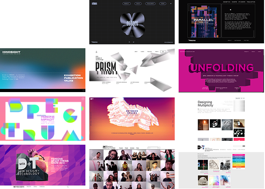

This is the 12th year of the Parsons DT thesis website.
We started by reviewing the previous iterations, identifying the common components that worked. Although not required, we decided to follow the same structure to maintain consistency.
We then took a deeper look at the 5 most recent sites, noting what we liked and disliked about the UX of each.

en·tro·py
Entropy was chosen as the theme of the class of 2023’s graduate showcase to embody the chaos and resilience we experienced during our time in the program.
Entropy, a physics concept, refers to a measure or state of disorder, randomness, or uncertainty. For us, it represents the beauty of chaos and the power of creativity.
Our branding team drafted a sample poster as a visual reference for the web design team, determining fonts, colors, and all visual elements.